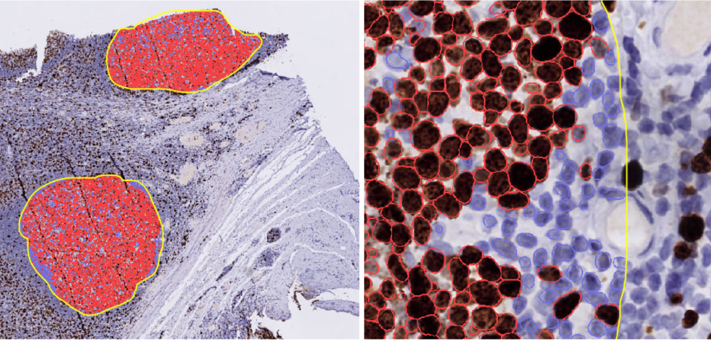
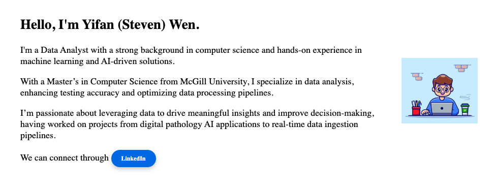
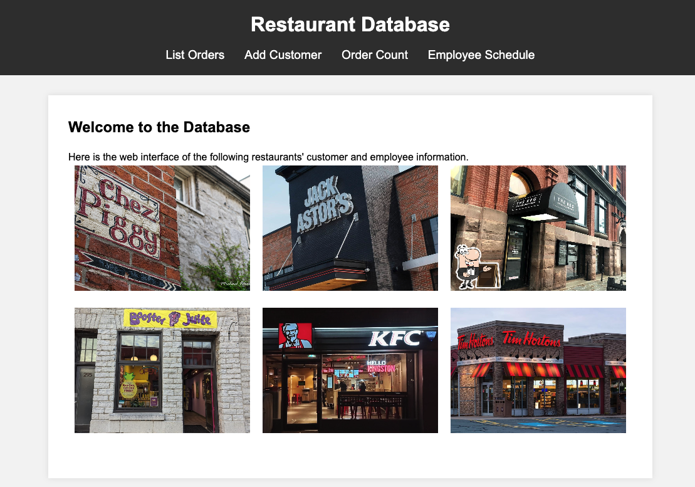
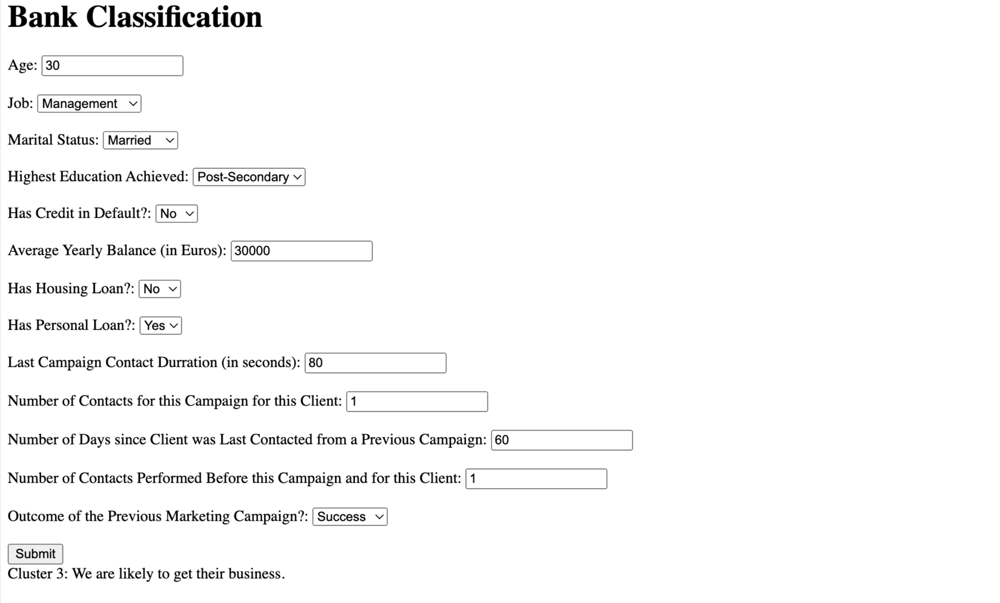

Projects
AI in Pathology
Enhanced IHC testing by integrating Whole Slide Imaging (WSI) with AI tools (StarDist, YOLOv8) for cell detection and germinal center segmentation.
Detect AI Text LLM
This project focuses on developing an advanced model to detect AI-generated text, aiming to distinguish it from human-written content.
Personal Webpage
Protfolio of some project that has been done in the past.
Streaming IoT data ingestion
This project develops a scalable, real-time data ingestion pipeline
Restaurant Database
A web-based interface for restaurant data.
Business Analysis
Analytical tool tailored for small and medium-sized banks, enabling them to effectively compete with national banks by identifying high-potential customers for targeted marketing.
AI in Pathology
Results showed significant improvements in reproducibility and reliability, setting new benchmarks for IHC quality. Future work will expand these AI models for broader IHC markers and validation across institutions.
For more info.
Detect AI Text LLM
By building upon SeqXGPT, the model integrates RoBERTa and additional layers for enhanced feature extraction and contextual analysis. This approach achieved a high detection accuracy of 99.1%,
More detail on this project:
Report
and Git

You’re Already Here!
Explore, click around, and get a feel for my works!
Source code:
Restaurant Data
A full functional web-based project let user add order and other interactions with the database.
Source code:
Kawartha Credit Union
To help small and medium-sized banks overcome budget constraints in marketing, the Marketing Success Identifier leverages K-means clustering for customer segmentation. By applying K-means clustering to customer data, this tool groups individuals with similar characteristics, highlighting segments with a high likelihood of subscribing to term deposits.
Project Overview: